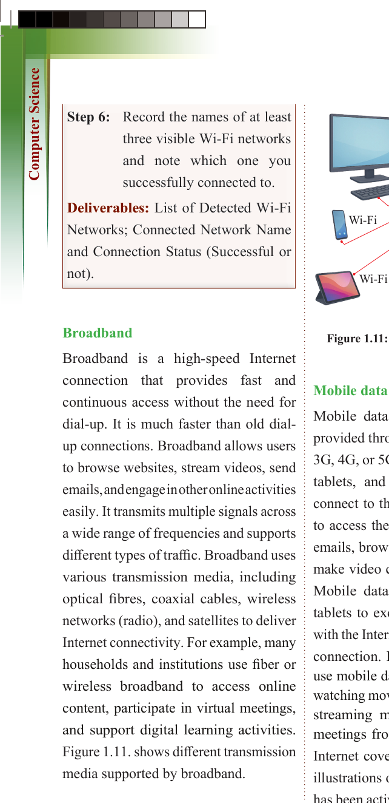
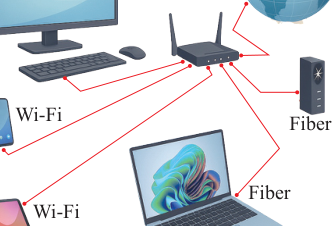

for Secondary Schools
.

Wi-Fi
Wi-Fi
Fiber
Fiber
Figure 1.11: Different transmission media supported by broadband
Mobile data
Mobile data refers to Internet access
provided through cellular networks (like
3G, 4G, or 5G) that allows smartphones,
tablets, and other mobile devices to
connect to the Internet. It enables users to access the Internet, send and receive emails, browse websites, stream videos,

make video calls, and use various apps.

Mobile data allows smartphones and

tablets to exchange digital information

with the Internet without a physical wired


connection. For example, many people


use mobile data to stay connected while

watching movies, accessing social media,


streaming music, or attending online

meetings from anywhere with network

Internet coverage. Figure 1.12 includes


illustrations of the mobile data icon that

has been activated (switched on) for use.


Step 6: Record the names of at least


three visible Wi-Fi networks
and note which one you
successfully connected to.
Deliverables: List of Detected Wi-Fi
Networks; Connected Network Name
and Connection Status (Successful or
not).
Broadband
Broadband is a high-speed Internet connection that provides fast and
continuous access without the need for
dial-up. It is much faster than old dial-
up connections. Broadband allows users to browse websites, stream videos, send
emails,andengageinotheronlineactivities
easily. It transmits multiple signals across
a wide range of frequencies and supports
different types of traffic. Broadband uses
various transmission media, including optical fibres, coaxial cables, wireless
networks (radio), and satellites to deliver
Internet connectivity. For example, many
households and institutions use fiber or
wireless broadband to access online
content, participate in virtual meetings,
and support digital learning activities.
Figure 1.11. shows different transmission
media supported by broadband.